AAConv
Un set de instrumente software pentru automatizarea procesului de transliterare
AAConv
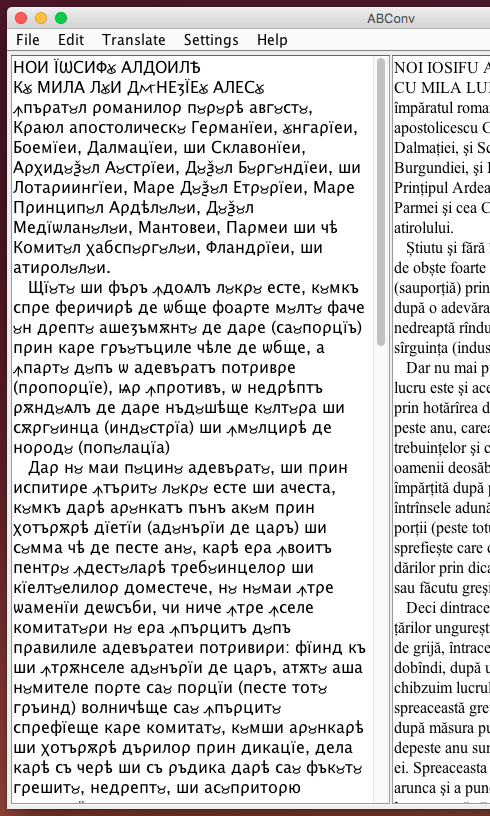 reprezintă un set de instrumente dezvoltate într-un limbaj cross-platform ce permite convertarea textelor din grafia chirilică în cea latină, și, respectiv, viceversa. Însăși aplicația de convertare AAConv este scrisă în întregime în Java, deci este o aplicație cross-platformă și poate fi executată pe orice sistem de operare Windows, Linux sau OS-X.
Pentru a utiliza AAConv este necesar să fie instalată doar mașina virtuală JVM. Aplicația nu necesită nici un compilator sau interpretator în afară de
JRE-ul (1.7 sau mai nou), care conține și JVM-ul necesar.
Aplicația a fost testată pe platforma Microsoft Windows (începând cu XP), pe platforma linux, și anume Ubuntu, cât și pe platforma Mac OS X. Așa cum aplicația se rulează pe mașina virtuală Java, ea nu va depinde de compatibilitatea cu arhitectura x86, deci se va rula nu doar pe mașinile IBM PC-compatibile
Codul sursă al aplicației încă nu este distribuit sub nici o licență open-source precum BSD-style license, dar în viitor poate fi posibil acest lucru.
- Cerințe
- Descarcă
- Pregătire
- Interfața gafică a aplicației
- Structura de meniuri și funcționalitățile aplicțației
- Ghidul utilizatorului
Se presupune că utilizatorul are experiență cu lucrul în software de oficiu precum MS Office Word sau oricare alte editoare de text (Libre Office, Open Office etc). Pentru a putea rula aplicația este dorit să ca utilizatorul să dețină o mașină de calcul IBM PC-compatibilă, dar asta nu este absolut necesar. Absolut necesar va fi să să fie instalat Java Runtime Environment JRE-ul (1.7 sau mai nou), care poate fi descărcat de pe site-ul oficial Oracle. Deci este necesar să fie prezentă mașina virtuală Java. Acestea sunt cerințele necesare pentru a putea utiliza în plină măsură aplicația de convertare AAConv.
La moment utlima versiune a aplicației AAConv se află în liber acces, și respectiv poate fi descărcată pe link-ul de mai jos. Versiunea currentă a aplicației este v1.6, dar se află în continuă dezvoltare. Link-ul către aplicație: AAConv.zip
Odată ce zip-arhiva a fost descărcată și respectiv dezarhivată, utilizatorul va obține următoarele fișiere ale aplicației:
- AAConv.jar - fișierul executabil ce pornește aplicația de convertare;
- Dictionary.txt - dicționarul de cuvinte în care se stochează excepțiile algoritmului de convertare, în formatul "cuvînd chirilic"/"cuvînt latin", și au prioritate superioară în procesul convertării. Utilizatorul poate adăuga, modifica sau șterge cuvinte din dicționar direct din fereastra principală a aplicației;
- Prefixes.txt - fișierul în care se stochează o bază de date de prefixe al limbii române, care are aport la corectitudinea transliterării unor cuvinte (în special celor ce conțin litera "â");
- confif.properties - fișierul în care se stochează configurațiile de sistemă ale aplicației, precum fontul ales sau mărimea lui;
- Mapa "Fonts" conține font-urile necesare pentru reprezentarea corectă al textelor ce conțin caractere slavone. La prima pornire a aplicației font-urile din mapa dată se vor instala automat dacă nu vor fi găsite prezente în mașina de calcul al utilizatorului;
- Mapa "lib" conține librăriile necesare pentru procesarea fișierelor *.docx *.doc și *.rtf.
Acestea sunt fișierele ce se conțin în distributivul oficial al aplicației AAConv. Cu timpul aplicația va fi dezvoltată și componența fișierelor, evident, va fi modificată.
Interfața grafică a aplicației AAConv are structura următoare - fereastra principală este împărțită în 2 panouri ce servesc ca containere și editoare de text. Panoul din stânga (left panel) este purtătorul de text chirillic iar panoul din dreapta (right panel) este purtătorul de text transliterat latin.
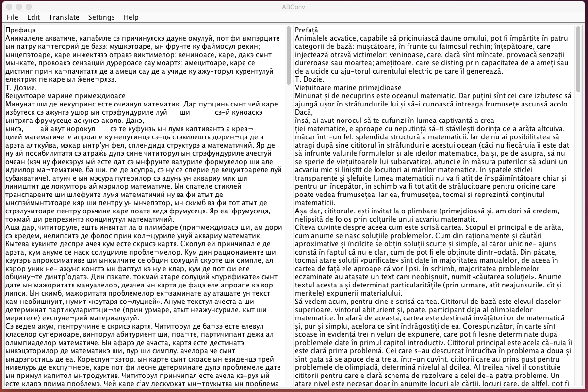
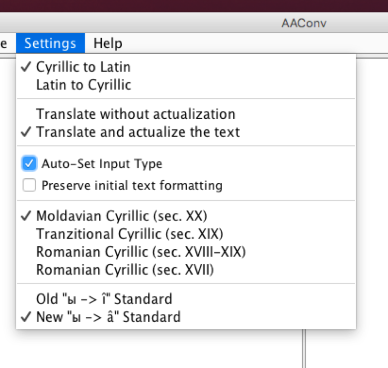
- „Cyrillic to Latin” sau „Latin to Cyrillic” – direcția generală a transliterării, din chirilică în latină sau invers. Aplicația permite transliterarea din latină în chirilică, doar cu unele mici dezavantaje: așa cum „chirilizarea” nu a fost scopul principal la realizarea aplicației date, algoritmul de transliterare din grafia latină în cea chirilică nu a fost încă perfecționat. Așadar rata erorii la transliterarea din latină în chirilică este semnificabil de majoră. Pe de altă parte, rata erorii la transliterarea inversă – din chirilică în latină – este nesemnificativă, nu întrece 0.01%;
- „Translate without actualization” sau „Translate and actualize the text” - funcția ce permite utilizatorului să aleagă dacă dorește să actualizeze ortografia textului chirilic inițial la legile ortografice contemporane ale limbii române, sau nu. Spre exemplu cuv. „трэеск” fără actualizare va rămîne exact „trăesc”, iar cu actualizare „trăiesc”
- „Auto-Set Input Type” – funcția dată procesează automat textul introdus de către utilizator și decide din ce perioadă istorică face parte, transliterând-ul conform algoritmului necesar. Așadar utilizatorul nu trebuie numaidecât să știe de algoritm să selecteze, funcția dată poate decide automat, judecând după conținutul textului introdus. Evident, utilizatorul poate porni sau opri funcția dată bifând sau nu checkbox-ul respectiv (by default el este bifat);
- „Preserve initial text formatting” - funcția ce permite utilizatorului să păstreze formatarea textului inițial în timpul convertării dintr-o grafie în alta. Astfel sunt păstrate paragrafele, aliniatele, stilul și mărimea caracterelor, imaginile, tabelele, formulele etc.
- „Moldavian Cyrillic (sec. XX)”, „Tranzitional Cyrillic (sec. XIX)”, „Romanian Cyrillic (sec. XVIII–XIX)” sau „Romanian Cyrillic (sec. XVII)” – reprezintă cele patru perioade istorice din care pot face parte textele chirilice spre transliterare. Utilizatorul poate selecta oricare din aceste trei perioade și apoi introduce textul său dorit, sau poate bifa celula de mai sus (Auto-Set Input Type) și aplicația singură va decide ce fel de text a fost introdus și îl va translitera conform algoritmului necesar;
- „Old “ы -> î” Standard” sau „New “ы -> â” Standard” – reprezintă cele două standarde de scriere a literei â. Conform legilor noi introduse în DEX litera „â” urmează să fie scrisă nu doar în cuvintele ce au rădăcina „rom” (precum românie, aromân) ci în toate cuvintele ce până acum erau scrise cu litera „î” cu excepția celor ce încep sau sfârșesc cu litera „î”, sau conțin un prefix înainte de ea (precum neînțeles). Așadar utilizatorul are posibilitatea să aleagă ce standard dorește să respecte algoritmul de transliterare cel mai nou, descris anterior, sau așa cum a fost până la introducerea standardului nou (când – cînd).
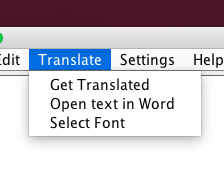
- „Get Translated” – transliterează textul de pe panoul din stânga (panoul chirilic) conform algoritmului selectat de către utilizator (selectarea are loc în compartimentul Settings). Așadar utilizatorul poate manual să introducă text de la tastieră sau să facă paste la un text chirilic pe panoul din stânga al aplicației, să dea click pe butonul dat și va obține pe panoul din dreapta textul respectiv transliterat;
- „Open Text in Word” – funcția dată salvează într-un fișier textul transliterat (de pe panoul din dreapta) și îl deschide cu MS Office Word, dacă acesta este instalat în calculatorul utilizatorului. Funcția dată permite utilizatorului într-un click să obțină textul transliterat în Office Word pentru a-l putea controla cu spellcheck-erul la greșelile ortografice care ar putea rezulta în urma transliterării;
- „Select Font” – funcția dată permite utilizatorului să selecteze font-ul dorit pentru fiecare din panelele de text (pentru cel cu text chirilic și cel cu text latin). Apăsând pe butonul dat se va deschide fereastra din figura de mai jos.
Așadar, utilizatorul apăsând pe oricare din butoanele „CHANGE LEFT PANEL FONT” sau „CHANGE RIGHT PANEL FONT” va accesa fereastra ce-i va permite să selecteze fontul, stilul și mărimea dorită. Totodată este prezentă și o previzualizare a fontului selectat. Apăsînd pe oricare din aceste două butoane se va deschide ferastra „Select Font” de mai jos.
Fonturile selectate se voi păstra în fișierul config al aplicației, așadar la următoarea pornire a aplicației ele se vor păstra așa cum au fost selectat. Dacă utilizatorul dorește să reîntoarcă setările inițiale ale aplicației – atunci este de ajuns să dea click pe butonul „RESET TO DEFAULT”.
Aplicația AAConv permite introducerea fișierelor cu text prin intermediul ferestrei standarde
JFileChooser, cât și prin „aruncarea” fișierelor direct pe interfața grafică a aplicației. Deci, cel mai recent, a fost implementată funcția Drag’n Drop, care ușurază considerabil lucrul utilizatorului cu utilajul software dat. Aplicația permite citirea fișierelor de format text cu extensia .DOCX, .DOC, .RTF .TXT. Toate fișierele cu altă extensie nu sunt acceptate la filtrate, și deci nu vor fi procesate.
Mai jos este prezentat succint ghidul utilizatorului, și anume răspunsurile la cele mai frecvente întrebări adresate (FAQ).
- Introducerea textului accesînd submeniul File -> Open Document. Se va deschide fereastra standartă JFileChooser de unde poate fi selectat fișierul cu textul chirilic necesar. Aplicația permite citirea fișierelor de format text cu extensia .DOCX, .DOC, .RTF .TXT. Toate fișierele cu altă extensie nu sunt acceptate la filtrate, și deci nu vor fi procesate.
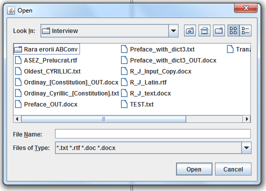
Introducerea textului prin metoda Drag’n Drop, deci aruncarea fișierului cu text pe suprafața interfeței grafice a convertorului. Vor fi acceptate și ulterior procesate doar fișierele text cu extensia .DOCX, .DOC, .RTF .TXT.. Fișierele cu altă extensie nu vor fi procesate.
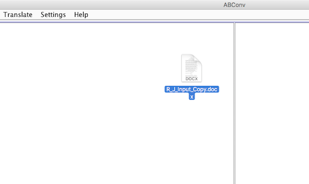
Introducerea textului chirilic prin tipărirea manuală de la tastatură. În acest mod poate fi atît introdus un text chirilic de la tastatură, cît și corectat sau modificat textul deja introdus dintr-un fișier extern.
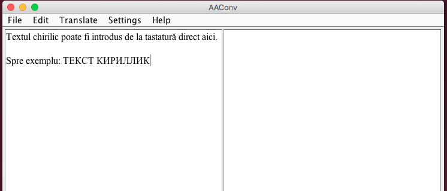
Pentru a converta textul chirilic introdus (de la tastatură sau prin oricare altă metodă sescrisă mai sus) este necesar de accesat submeniul Translate -> Get Translated.
Astfel, tot textul de pe panelul din stînga va fi convertat în grafia latină.
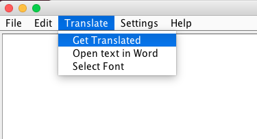
Pentru a alege perioada istorică corespunzătoare textului introdus este necesar de accesat submeniul Settings și de ales una din perioadele istorice disponibile:
- Moldavian Cyrillic (sec. XX)
- Tranzitional Cyrillic (sec. XIX)
- Romanian Cyrillic (sec. XVIII)
- Romanian Cyrillic (sec. XVII)
Selectînd oricare din aceste perioade istorice textul introdus va fi convertat conform algoritmului respectiv. Dacă nu sunteți sigur din ce perioadă istorică face parte textul introdus, atunci asigurați-vă că este bifată căsuța Auto-Set Input Type și introduceți textul încă o dată prin oarecare metodă descrisă mai sus. Astfel, convertorul singur va detecta din ce perioadă istorică face parte textul introdus și îl va converta conform algoritmului cel mai potrivit.
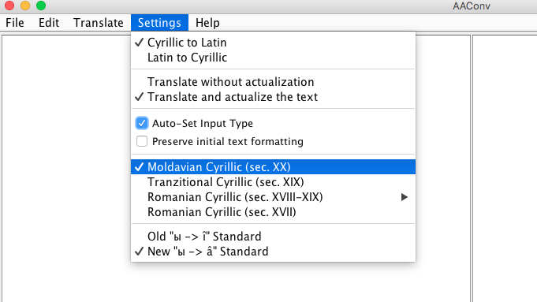
Pentru a salva textul latin obținut este necesar de accesat submeniul File -> Save Document.
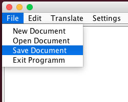
Se va deschide fereastra standartă JFileChooser unde va putea fi selectat numele și formatul fișierului dorit în care se va salva textul latin. Dacă doriți să păstrați formatarea inițială a textului introdus (paragrafele, aliniatele, stilul și mărimea caracterelor etc) atunci aigurați-vă că este bifată căsuța Preserve Initial Text Fromatting din submeniul Settings și atunci salvați textul în modul descris mai sus.
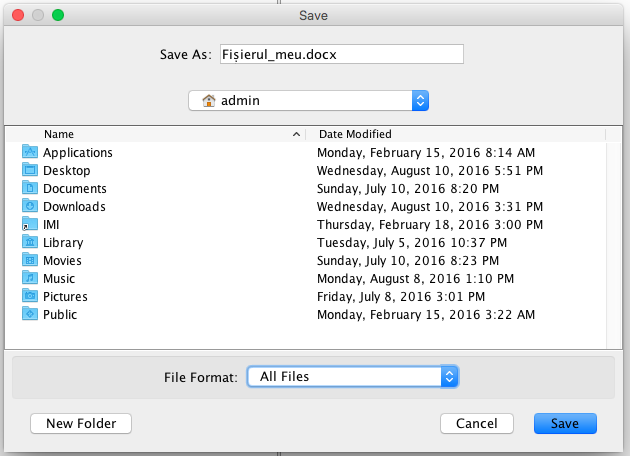
Convertorul AAConv conține cîte un dicționar de excepții pentru fiecare perioadă istorică, iar dicționarul poate fi ușor modificat sau actualizat de către utilizator. Așadar utilizatorul poate introduce cuvinte în dicționarul de excepții, poate actualiza cuvintele deja existente în dicționar (cu alte cuvinte propune o varinată mai potrivită de transliterare pentru un oarecare cuvînt chirillic), sau poate șterge oricare cuvînt din dicționar. Toate aceste acțiuni pot fi întreprinse accesînd submeniul Edit și respectiv New Record, Update Record sau Delete Record
.
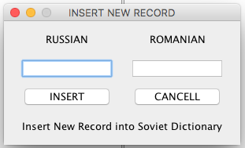
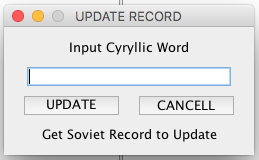
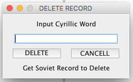